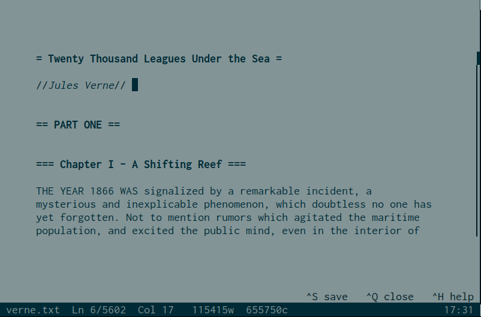
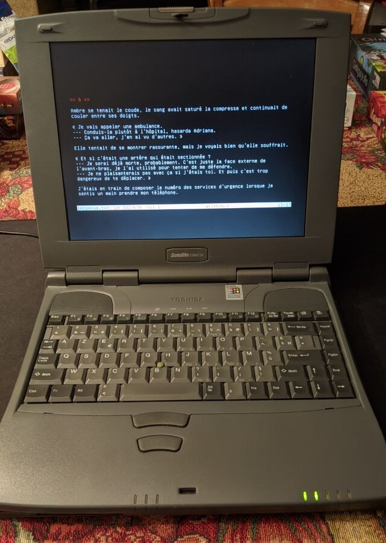
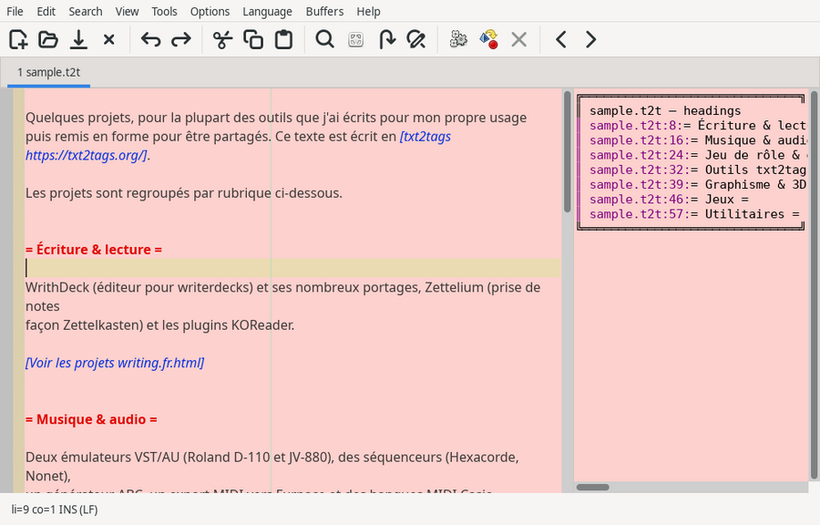
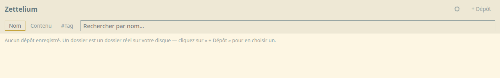

WrithDeck
A distraction-free text editor for writerdecks (homemade prototypes or computers dedicated to writing), as a GUI or straight in a terminal/TTY, from a single executable with no install. Markdown/txt2tags syntax highlighting, a modal command mode, writing stats, a timer and stopwatch, light/dark themes. Also ported to Android, ASM, C, DOS, ESP32, Lua and web.

WrithDeck everywhere
The same editor, ported to very different machines: Android (Kotlin), ESP32 (embedded JimTcl, VGA output and PS/2 keyboard), assembly, uxn, web (a single HTML file) and C. The C version produces a tiny static binary with no dependencies, for very old hardware (photo: a Toshiba 2180).

SciTE plugins
Lua scripts for the SciTE editor: a file
finder and browser with content and tag search, recent files, snippets, a
heading navigator (txt2tags and Markdown), txt2tags/Markdown formatting from
the context menu, expression evaluation, and Zettelkasten-style
[[target|ID]] links with backlinks.

Zettelium
A Zettelkasten note-taking app in txt2tags syntax, packaged as a single
self-contained HTML file (no server, no install). [[target|id]] links
with a backlinks panel, live syntax highlighting and preview, tag search,
several local repositories through the File System Access API. Built on
the same principles as WrithDeck, with which it shares the same plain-text
files.

KOReader plugins
Custom plugins for the KOReader e-reader,
including txt2tagsreader (native reading of .t2t files) and
bookstats (reading statistics, word count).